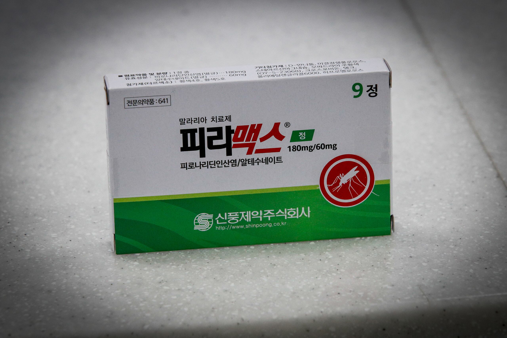

1962–1989
창립과 생산 기반의 확립

신풍제약사 창립
메벤다졸 원료합성 성공
안산 반월공단 KGMP 공장 준공
중앙연구소 설립
의약품을 통해 더 나은 삶에 기여한다는 마음으로,
오늘의 역할에 충실하며 내일의 가능성을 넓혀갑니다.
1962년 창립부터 이어 온 연구와 성장의 주요 발자취입니다.
1962–1989
신풍제약사 창립
메벤다졸 원료합성 성공
안산 반월공단 KGMP 공장 준공
중앙연구소 설립
1990–2009

증권거래소 주식 상장
신풍대우파마베트남 합작공장 설립
WHO와 항말라리아 신약 공동개발 협약
오송 세파항생제 전용공장 기공
2010–2015

피라맥스 공장 EU-GMP 인증
피라맥스정 EMA 등록
세파계 항생제 전용공장 KGMP 인증
소아용 피라맥스 과립 EMA 등록